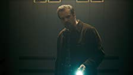
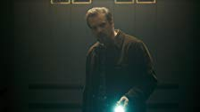

Stranger Things
Lecture
Ma Liste
Évaluer
Partager
ÉPISODES
 Chapitre 1: The Vanishing of Will Byers
Chapitre 2: The Vanishing of Will Byers
Chapitre 1: The Vanishing of Will Byers
Chapitre 2: The Vanishing of Will Byers
 Chapitre 3: The Vanishing of Will Byers
Chapitre 4: The Vanishing of Will Byers

Chapitre 5: The Vanishing of Will Byers
Chapitre 6: The Vanishing of Will Byers
Chapitre 7: The Vanishing of Will Byers
Chapitre 8: The Vanishing of Will Byers
Chapitre 3: The Vanishing of Will Byers
Chapitre 4: The Vanishing of Will Byers

Chapitre 5: The Vanishing of Will Byers
Chapitre 6: The Vanishing of Will Byers
Chapitre 7: The Vanishing of Will Byers
Chapitre 8: The Vanishing of Will Byers